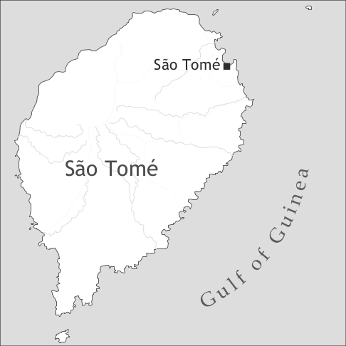

by Tjerk Hagemeijer

Santome is primarily spoken on the island of São Tomé in the Democratic Republic of São Tomé and Príncipe, which consists of two islands in the Gulf of Guinea, West Africa. Pockets of Santome speakers can be found in countries such as Portugal, Angola, or Gabon. The language is historically connected with a self-reported group, the Forros, whose name is derived from Portuguese forro ‘freed (slave)’.
The island of São Tomé was uninhabited when it was discovered by the Portuguese in 1470; it was permanently settled in 1493. There are still many questions with respect to the early demographics of the island. The available evidence suggests that during the homestead period, which lasted until approximately 1520, most slaves came from what is now Nigeria, especially the Edoid-speaking area (former kingdom of Benin), where the Portuguese ran a trading post at Ughoton. During the initial phase of settlement, each settler was granted a female slave by royal decree, with the purpose of settling the island. References to admixture of slave settlers and Portuguese settlers are well attested. The women and the children born under these circumstances became freed slaves in the 1510s. The shift to a plantation society in the 1510s corresponds to the arrival of Bantu-speaking slaves on the island, mainly from the ancient kingdom of Kongo and Angola. The Niger Delta gradually lost its importance and relations with the kingdom of Benin were cut off in the middle of the 16th century. The sugar industry on São Tomé peaked in the 1560s, and by the end of the century it collapsed due to a number of internal and external factors such as conflicts with runaway slaves and the superior quality of Brazilian sugar. However, after the collapse of the plantation system São Tomé continued to function as an entrepôt in the transatlantic slave trade. Although it is estimated that over 90% of Santome’s lexicon is derived from Portuguese, the impact of the African strata is felt in the lexicon, with a fairly equal split between Edoid and Kikongo etymologies, and especially in the grammar (Ferraz 1979). Santome is historically related to Angolar (also spoken on São Tomé, see Maurer 2012a, this volume), Principense (spoken on Príncipe, see Maurer 2012b, this volume), and Fa d’Ambô (spoken on Annobón, see Post 2012, this volume and Hagemeijer 2011).
Although Portuguese is the official and most spoken language on São Tomé, Santome is spoken and understood by most of the population, which includes Principense and Angolar speakers. According to the 2001 census, the number of Santome speakers is rapidly declining among the younger generations. In 2009, Pontifice et al. prepared a spelling proposal (ALUSTP) for Santome, Principense and Angolar at the request of the Santomean government. In 2010, the proposal was ratified by the country’s Minister of Education and Culture. Otherwise very little consistent action has been undertaken to maintain or revitalize the country’s linguistic patrimony. Radio and television broadcastings in Santome are limited, but most local music is sung in this creole. Pioneering short descriptions were written by Schuchardt (1882) and Negreiros (1895), but renewed academic interest in Santome and the Gulf of Guinea creoles in general had to wait until the second half of the 20th century. The Creole of São Tomé (1979) by Luiz Ivens Ferraz stands out as a milestone in the studies on Santome. Despite the ongoing academic interest in Santome, no grammar has yet been published. There are a few sources for the lexicon, namely the Dicionário lexical Santomé-Português (Ministério da Educação e Cultura), as well as the work in Rougé (2004) and Fontes (2007). Santome has been occasionally used as a written language since the second half of the 19th century, but there are only a few publications in this language.
Santome exhibits seven oral and five nasal vowels (see Table 1). Mid-vowel stem harmony is a pervasive feature of this creole (Hagemeijer 2009). Ferraz (1979) argues that Santome is a stress language, but this claim has been rejected by Maurer, who argues that Santome, as well as Principense, and Angolar, are tone languages (Maurer 1995, 2008, 2009). All lexical items in Santome end in an oral or a nasal vowel. A highly common type of sandhi rule consists of eliding the first vowel in a sequence of two vowels across word boundaries (mat’e ‘kill him/her/it’ < mata ê).
|
Table 1. Vowels (Ferraz 1979: 20) |
|||
|
front |
central |
back |
|
|
close |
i, ĩ |
u, ũ |
|
|
close-mid |
e, ẽ |
o, õ |
|
|
open-mid |
ɛ |
ɔ |
|
|
open |
a, ã |
||
Santome has a phonemic inventory of 28 consonants and two glides. In general, the palatals [ʧ, ʤ, ʃ, ʒ] occur before close front vowels and are in complementary distribution with [t, d, s, z], which occur in all other environments. There is free variation between [ʤ] and [ʒ]. Note further that items exhibiting a prenasalized consonant can often occur without prenasalisation (e.g. ŋgandu ~ gandu ‘shark’; nzali ~ zali ‘worm’). In addition to the consonants in Table 2, the labiovelar [g͡b] exists in a small number of exceptional items not known to most speakers, such as [g͡beg͡be] ‘snail species’, and a nasal approximant can be found in the ideophone [w̃a] (betu w̃a ‘wide open’) and in [nw̃a] ‘moon’. The trill [r] is not historically part of Santome but can be systematically heard in loan words, such as karu ‘car’ or ora ‘hour’ (clock time). Some speakers also produce the trill in other environments, such as consonant clusters (e.g. ladron ‘thief’, setembru ‘September’, Kristu ‘Christ’). The number of items with nasal and lateral palatals /ɲ/ (e.g. panha ‘to catch’) and /ʎ/ (e.g. alha ‘sand’) is limited.
|
Table 2. Consonants |
|||||||
|
bilabial |
labio-dental |
alveolar |
post-alveolar |
palatal |
velar |
||
|
plosive |
voiceless |
p |
t |
k |
|||
|
voiced |
(b) |
(d) |
g |
||||
|
prenasalized plosive |
voiceless |
mp |
nt |
ŋk |
|||
|
voiced |
mb |
nd |
ŋg |
||||
|
implosive |
ɓ |
ɗ |
|||||
|
nasal |
m |
n |
ɲ |
ŋ |
|||
|
trill |
(r) |
||||||
|
fricative |
voiceless |
f |
s |
ʃ |
|||
|
voiced |
v |
z |
ʒ |
||||
|
prenasalized fricative |
voiceless |
nf |
|||||
|
voiced |
nz |
||||||
|
affricate |
voiceless voiced |
ʧ ʤ |
|||||
|
glide |
w |
j |
|||||
The typical syllable structure is of the CV type. Words with one or two syllables are the most common type, but words with three or four syllables are still fairly common. Some lexical items are commonly truncated, such as toma ~ ton ‘to take’, sêbê ~ sê ‘to know’, anji ~ an ‘where’, tembeten ~ ten ‘also, as well’. Onsets exhibit up to three consonants, as in /ʃtlenu/ ‘night dew’ or /ʃkleve/ ‘to write’. Verbs in Santome begin strictly with a consonant.
Gender is usually not morphologically encoded. Nouns referring to humans exhibit fully contrasting pairs (pe ‘father’ vs. men ‘mother’), but there are cases where the morphological contrast found in Portuguese has become lexicalized (manu ‘brother’ vs. mana ‘sister’). Animate, non-human nouns can generally form compounds with ome ‘man, male’ and mwala ‘woman, female’ (bwê ome ‘bull’ vs. bwê mwala ‘cow’).
Number is either expressed by contextually interpreted bare nouns (n kopla floli ‘I bought flowers’; ome sa bwa ‘the man is good’) or by the plural/definite marker inen (inen mosu ‘the boys’), which only attaches to inanimate nouns in the presence of the postverbal demonstrative-like marker se (*inen fya vs. inen fya se ‘the flowers in question’) (Alexandre & Hagemeijer 2007). The indefinite article and numeral ũa ‘a(n), one’ also precedes the noun. Bare nouns further occur in generic sentences.
Possessives, adjectives, and relative clauses follow the head noun. In their unmarked position, numerals and quantifiers precede it. This yields the following basic word order of the NP, exemplified in (1)
quant – {pl.def, sg.indef} – num – N – dem – poss – adj - rel
(1) tudu inen xinku mina se bô glavi ku sa ke
all PL.DEF five child DEM POSS beautiful REL be house
‘all these five beautiful children of yours that are at home’
Distance contrasts are often expressed periphrastically since deictic se by itself lacks distance information.
(2) ke se ku sa {ai/ala}
house dem rel be here/there
‘this/that house’
Shorter forms ke sa ai ‘this house’ and ke sa ala ‘that house’ are also used. In addition, postnominal xi is used for entities that are out of sight and its use as a modifier of the head noun of relative clauses is particularly common.
(3) kume xi ku ê kume
food dem rel 3sg eat
‘the food s/he eats’
The pronominal demonstratives are ise ‘this, these’, ixi ‘that, those’ (out of sight), isaki ‘this, these’, and isala ‘that, those’.
Table 3 lists dependent, independent, and possessive pronouns.
|
Table 3. Personal pronouns and possessives |
|||||
|
subject |
object |
independent pronouns |
adnominal possessives |
||
|
1sg |
n |
mu |
ami ~ am |
mu |
|
|
2sg |
informal |
bô ~ ô |
bô ~ ô |
bô |
bô |
|
3sg |
informal |
ê |
ê, e |
êlê |
dê |
|
2sg/3sg |
formal |
sun, san |
sun, san |
sun, san |
sun, san |
|
1pl |
non |
non |
non |
non |
|
|
2pl |
inansê nansê |
inansê nansê |
inansê nansê |
dinansê ~ nansê |
|
|
3pl |
inen nen |
inen nen |
inen |
dinen ~ nen |
|
|
indf |
a |
||||
The table shows that subject and object pronouns only exhibit distinct forms in the first person singular. The contrast between dependent and independent pronouns is restricted to singular pronouns. Fine-grained distinctions between the pronouns are mostly related to phonological reduction and cliticization (2SG dependent, 1SG independent, 3PL), vowel harmony (3SG object), or free variation (2PL) (Hagemeijer 2007). The indefinite subject pronoun a (e.g. a fla ‘it is said’) can also anaphorically refer to a 3PL referent and may occur in plural imperatives (e.g. a kume! ‘you eat!’ (plural)).
The paradigm of adnominal possessives is slightly different because they are underlying genitive forms (dê = ‘his/her, its’, is derived from the obligatory contraction of *di ê ‘of him’). This is only visible with vowel-initial pronouns (ê, inansê, inen). In the case of consonant-initial possessives, the genitive marker di is absent (Ferraz 1979: 69–70). Predicative possessives, however, use the obligatory genitive marker dji ~ ji:
(4) Ke sa ji mu.
house be of me
‘The house is mine.’
Genitive ji also selects the underlying genitive forms dê, dinansê, and dinen, resulting in a double genitive construction (e.g. ji dinen ‘of them’).
Mood, tense, and aspect in Santome are expressed by means of preverbal elements, which occur in this order and can be combined. The core of the system consists of the following items: ka is typically used for habitual or future reference; sa ka ~ ska is a progressive marker; tava ~ taa expresses past; ká is a high-tone-bearing mood marker. In addition to these markers, the absence of marking yields perfective readings with dynamic verbs and present readings with statives. Syntactically stative verbs are those verbs that receive a zero marker for simple present and a past marker tava for simple past. This small group of verbs includes: mêsê ‘to want, to love’, sêbê ‘to know’, tê ‘to have’, kônsê ‘to know’, fata ‘to lack’, sen ‘to exist’, tê ‘to have’, sa ‘to be’. There is also a small group of verbs that are stative according to lexical aspect but whose syntactic behaviour is similar to dynamic verbs (Hagemeijer 2007, Maurer 1995, 2009). This group includes: kunda ‘to think’, ngosta ~ gosta ‘to like’, gôgô ‘to enjoy, to love, to like’, kontle ‘to hate’. These verbs take ka for present reference. Note further that some verbs of both stative classes may occur with the progressive marker ska, for instance fata and mêsê.
|
Table 4. Tense-Aspect-Mood markers |
||
|
dynamic verbs |
stative verbs |
|
|
Ø |
past perfective |
simple present |
|
ka |
future habitual/generic |
future simple present, habitual |
|
ska ~ sa ka |
present progressive |
- |
|
tava |
past-before-past |
simple past |
|
tava ka ~ taa ka |
habitual past, past progressive |
- |
|
ka ska ~ ka sa ka |
iterative present progressive |
- |
|
ka ka |
iterative present progressive |
|
|
tava ka ska |
iterative progressive past |
|
|
sa ska |
present progressive |
|
|
ka sa ska |
future present progressive |
|
|
ká |
mood (hypothetic) |
mood (hypothetic) |
|
ká tava ~ ká taa |
irrealis (counterfactual) |
mood (counterfactual) |
|
ká tava ka ~ ká taa ka |
irrealis (progressive counterfactual) |
|
In Table 4, sa and tava (in the tava ka construction) can be treated as auxiliaries because, unlike ka, ká, and ska, they exhibit a number of verbal properties (Hagemeijer 2007). The combinations ka ska ~ ka saka, ka ka, sa ska, and ka sa ska are particularly common in temporal clauses.
(5) Ola non ka sa ska linga kaleta [...]
when 1pl fut AUX prog hoist poor.guy, […]
‘When we will be hoisting the poor guy […]’
In the case of ngosta ~ gosta, the difference between a habitual stative and an individual-level stative plays a role in TAM-marking, as shown in the following two pairs.
(7) Mina se gosta d’ ami muntu.
girl dem like of 1sg much
‘The girl in question likes me a lot.’ (Hagemeijer 2007: 123)
Table 5 lists the relevant modal verbs in Santome according to subclasses.
|
Table 5. Modal verbs |
|||
|
modality type |
example |
||
|
epistemic modality |
possibility |
pô ‘can, may’ pôdja ~ pôja ‘could’ {ê, kwa} ka pô sa ‘it is possible’ |
|
|
necessity |
pôdja ~ pôja ‘should’ |
||
|
root modality |
deontic modality |
obligation/necessity |
tê (di) ‘have to’; sela (pa) ‘must, it is necessary that’ toka ‘ought, should’ milhon (pa) ‘better’ |
|
permission |
pô ‘can, may’ |
||
|
dynamic modality |
ability |
sêbê ‘can, to be able to’ |
|
|
volition |
mêsê ‘to want to’ |
||
The items in Table 5 precede the matrix verb, except for sela (pa) and milhon (pa), which do not exhibit verbal behaviour and occur in sentence-initial position.
(8) (deontic necessity)
Sela non fla Santome ben fladu.
must 1pl speak Santome well spoken
‘We must speak good Santome.’ (Hagemeijer 2007: 166)
When pô is preceded by the aspect marker ka, it generally expresses epistemic possibility. Contexts without ka trigger a deontic interpretation.
(10) (epistemic possibility)
[...] punda non ka pô kloga.
because 1pl ipfv may slip
‘[...] because we may slip.’
(11) (deontic permission)
Sun pô be.
you may go
‘You (formal) may go.’
Serial verb constructions form a core feature of Santome’s grammar (Hagemeijer 2000, 2001, Hagemeijer & Ogie 2011), as illustrated in the following examples.
(12) (‘give’-serial)
Ba sama dôtôlô da mu.
go call doctor give me
‘Go call a doctor for me.’
(14) (directional)
A ka subli ba Txindaji ô.
indf ipfv go.up go Trindade pcl
‘They go up to Trindade.’
(15) (resultative serial)
Budu da kopu kebla.
stone hit glass break
‘The stone broke the glass.’
(16) (comitative)
Bamu zunta kopla minjan.
let’s join buy remedy
‘Let’s buy the remedy together.’
(17) (surpass)
Punda sôtxi Dêsu ka lêdê pasa xikotxi.
because beating God ipfv burn surpass whip
‘Because God’s beating burns more than the whip.’
(18) (completive)
Ami ten na sêbê kont’ e kaba fa.
1sg also neg know tell 3sg finish neg
‘I don’t know how to tell it (a story) all the way either.’
(19) (‘take’-serial)
Ê ka toma labu bana moxka.
3SG IPFV take tail shake fly
‘He (the cow) shakes off the flies with his tail.’
Note that several of these items, namely da, pasa, and kaba, do not exhibit any verbal properties (Hagemeijer 2000, 2001). Because of the widespread serialization strategy, the number of prepositions proper is small (di ‘of’, ni ‘in, at, from, on’, antê ‘until’, djina ‘since’, sê ‘without’, ku ‘with’, pla ‘for’, plô ‘for’). There are also a small number of nominal prepositions (wê ‘(in) front (of)’, tlaxi ‘behind’, ômê ‘(in the) middle (of)’, bodo ‘next to’, glêntu ‘inside’, basu ‘underneath, beneath’, liba ‘on top of’) (Hagemeijer 2005). There are a few items that derive historically from serializing constructions, such as fada ‘to tell’ (< fa ‘say’ + da ‘give’) and tanda ‘hand over’ (< tan ‘to take’ + da ‘give’).
Sentence negation in Santome is expressed by a default discontinuous negation pattern with na…fa (Hagemeijer 2007): na occurs in preverbal position; fa (or its emphatic variant fô) occurs in clause or sentence final position.
(20) Ê na fada mana dê kwa ku kod’ e fa.
3sg neg tell sister poss thing rel wake 3sg neg
‘He didn’t tell his sister about what woke him up.’ (Hagemeijer 2007: 175)
The placement of fa shows sensitivity to clause types. Complement clauses and non-peripheral adjunct clauses occur to the left of fa, whereas peripheral adjunct clauses occur to its right.
(21) Ome se na fla kuma ê sa kunhadu bô fa.
man dem neg say that 3sg be brother-in-law poss neg
‘That man didn’t say he’s your brother-in-law.’ (Hagemeijer 2007: 178)
(22) Ê na ka nda sê pa ê da topi fa.
3sg neg ipfv walk without for 3sg give trip neg
‘He doesn’t walk without tripping.’ (Hagemeijer 2007: 180)
(23) Xi ê na bê faka fa, ê na bêbê vin fa.
if 3sg neg see knife neg 3sg neg drink wine neg
‘If he doesn’t find the knife, he won’t drink wine.’ (Hagemeijer 2007: 184)
Santome further exhibits two complex preverbal negation markers that can occur in the place of na, namely naxi ‘not yet’ and nanta ~ nantan ‘no longer, not anymore, never (again)’.
There are a number of contexts that lack the final marker fa. These constructions typically have in common a lack of commitment to the truth condition of the negation.
For constituent negation, fa is used (e.g. bô fa! ‘not you!). Santome is a strict negative concord language, as illustrated in the following sentences with negative quantifiers.
(27) Nê ũa ngê na glita fô!
not one person neg scream neg.pcl
‘Nobody screamed!’
(28) Ami na tê nadaxi di da nansê fa.
1sg neg have nothing to give 2pl neg
‘I don’t have anything I can give you.’
Santome is a rather strict SVO language. With very few exceptions, referential and expletive subjects are always overtly realized. In double object constructions, the indirect object always precedes the direct object. Adverbial material occurs typically in sentence-initial or sentence-final position. This yields the following typical linear order for clauses:
(29) adv – subj – neg1 - mood – tns – asp – V – obj – obj - adv – neg2
Only a restricted number of focalizing adverbs (ten ‘also’, tan ‘only’, etc.), including the focus marker so ~ soku, follow the focalized constituent (ten ‘also’, tan ‘only’, etc.).
(30) Ami tan so fika.
1sg only foc remain
‘It is only I who remained.’
Santome lacks a passive voice. There are several strategies to express reflexive voice, namely valency reduction, body-part reflexives, and pseudo-reflexives:
(31) N ga ba kenta Ø.
1sg asp go warm
‘I am going to warm myself.’ (Ferraz 1979:72)
(33) N be mu fela.
1sg go refl market
‘I went away to the market.’
Reciprocal voice is expressed by ũa…ôtlô.
(34) Ũa ska mata ôtlô.
one prog kill other
‘They are killing each other.’
The copula verb sa is overtly realized in both equative and locative constructions.
Santome exhibits several highly productive particles that modify clauses or constituents. The syntax, semantic, and pragmatics of these particles has not been studied in detail (but see Ferraz 1979: 113; 116–8).
|
Table 6. Constituent and clause-typing particles |
|
|
an |
yes/no questions; special emphasis with speech verbs fla ‘to say’ and fada ‘to tell’ (Ferraz 1979: 117) |
|
ê |
vocative at constituent level; emphasis at clause-level, occurs at the end of Wh-questions |
|
fa ~ fan |
classified by Ferraz (1979: 117) as a respectful tag; used in imperatives and to insist on previous discourse |
|
en |
emphasis on the temporal and spatial deictic center, attaching frequently to adverbs of place (e.g. ai ~ nai ‘here’) and manner (e.g. axi ‘like this, this way’), as well as presentations (cf. ex. 38) |
|
ô |
classified by Ferraz (1979: 113; 116–7) as a respectful tag and emphatic marker; frequent in yes/no questions, imperative clauses, and to insist on previous discourse |
The following sentences illustrate the use of the particles in Table 6.
The presentational marker is ya or yale, which is arguably derived from Portuguese olha ‘look’.
(38) Ya ngê ku txila non en.
pres person rel take 1pl pcl
‘There is the person who took us out.’
Interrogative phrases are typically sentence-initial and usually trigger the presence of the complementizer ku.
In focus constructions, the focused constituent occurs to the left of the focus marker so ~ soku.
(40) Ise maxi glavi ku sa ala so n mêsê.
dem more pretty rel be there foc 1sg want
‘It is the prettier one over there that I want.’
In relative and interrogative constructions, prepositions are normally stranded with an invariable spelled-out trace (or resumptive element) corresponding to 3SG.
(41) inen kwa se ku a ka da ngê sôtxi ku {ê/*inen}
pl thing dem rel indf ipfv give people beating with {3sg/3pl}
‘those things they beat people with’
Topic interpretations are obtained by fronting and a pause.
(42) Tudu inen bisu, ê ka limpa lolo.
all pl animal 3sg fut clean completely
‘All these animals, he will clean completely.’
Santome has the following coordination conjunctions: i ‘and’, a zero conjunction, maji ‘but’, ô ‘or’, and polar nê ‘neither, or’.
Complement clauses are headed by the following complementizers: kuma (declarative, epistemic, and perception verbs), which can be ku or a zero marker in certain cases, pa (volitional verbs), and xi ‘if, whether’ (indirect interrogatives). Adverbial clauses are headed by, for instance, temporal ola (ku) ‘when’, conditional xi ‘if’, causal punda and da ‘because (of)’, mo ‘like, as’, circumstantial negative sê (pa) ‘without’, temporal final zo (pa) ‘(and) then’, comparative dôkê ‘than’, conformative mo ‘like’, temporal-spatial antê (ku) ‘until’ and djina ~ jina ‘since’, and purposive pa. Relative clauses are headed by ku. There are also cases in which clause-linking is performed without an overt conjunction, as in the case of concessive clauses.
Santome lacks inflectional morphology, but exhibits two productive derivational suffixes and extensive reduplication. The derivational suffixes are the past participle -du (tasondu ‘seated’ < tason ‘to sit’, mundjadu ‘stopped, upright’ < mundja ‘to stop’) and the agentive -dô (sublidô pema ‘palm tree climber’ < subli ‘to climb, to go up’, dadô soya ‘storyteller’ < da ‘to give, to tell, to hit’). There are several other suffixes that are not productive and are therefore arguably directly borrowed from Portuguese, such as -mentu (suflimentu ‘suffering’, kazamentu ‘marriage’) and -in (flaskin ‘small recipient’, maxibin ‘young man’, pombin ‘dove’) which are respectively related to Portuguese noun forming -mento and the diminutive -inho. Compounding is another productive strategy, for example in kota-bega ‘last-born’ (lit. ‘cut-belly’) and vwa-sata ‘shortcut’ (lit. ‘fly-jump’).
Reduplication applies to most categories and expresses intensification and distribution. A few examples are:
(46) (intensification)
N ga bi myole-myole me.
1sg ipfv come now-now right
‘I’m coming right now.’
Santome further exhibits a large number of ideophones (more than a hundred), which typically modify nouns, verbs, and adjectives, but sometimes stand on their own. Ideophones are mostly reduplicated items on the surface but lack a non-reduplicated counterpart. Each ideophone occurs with one lexical item or a restricted set of semantically related lexical items. Some examples are txibitxibi ‘so so’ (answer to ‘how do you do?’), kebla nwininwini ‘scatter’ (break+ideophone), sola potopoto ‘cry intensely’, monhadu potopoto ‘extremely wet’, betu blalala ‘wide open (open+ideophone)’, fyô kôkôkô ‘very cold’.
The address forms in Santome have not yet been carefully studied and are quite intricate. In a nutshell, Santome distinguishes between informal (bô ‘you’) and formal address forms. The latter have a feminine and a masculine form, san ‘you, she’ and sun ‘you, he’, respectively, which are used as pronouns.
San can also be used with the meaning ‘lady’ or ‘Mrs.’ (san Zwana ‘Mrs. Joana’) and sun as ‘Sir, Mr.’ (sun Me Kolema ‘Mr. Manuel Quaresma’). The long formal forms sangê ‘lady’ (derived from san+ngê ‘lady+person’) and sungê ‘Mr., Sir’ are generally less intimate and, unlike san and sun, are also used as vocative forms (sungê, bi ô ‘You/Mr., please come’) and do not precede proper names (*sangê Zwana). The plural of these forms is inen san and inen sun ‘you, they’, but pronouns inansê ‘you (pl.)’ and inen ‘they’ are also used. Instead of san/sangê and sun/sungê, the forms sumu and samu are sometimes used (plural inen sumu, inen samu); these also enter the complex forms samungê ‘lady’ and sumungê ‘sir’. Important personalities can also be addressed with sumu sun (masc.) and samu san (fem.), as in sumu sun alê ‘his majesty the king’. Finally, proper names can be used as a polite way to address people.
(48) Sela pa Sabinu da non mina soya pa non têndê.
must for Sabinu give 1PL small story for 1PL listen
‘You must tell us a little story to listen to.’